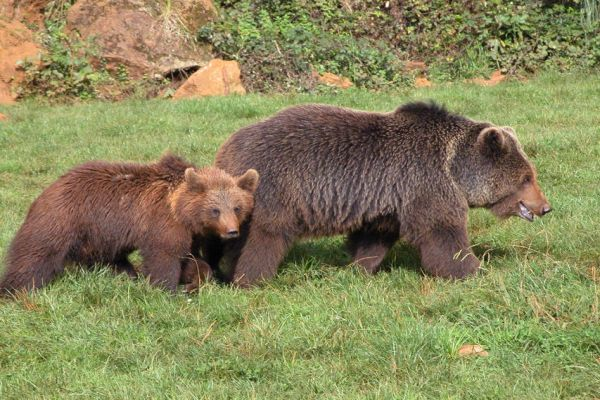

Cuevas de Altamira - Santillana del Mar - Cantabria
El Museo de Altamira se encuentra a 2 km de distancia del centro urbano de Santillana
del Mar en Cantabria, junto a la cueva original.
Fue en 1868 y 1879 cuando se encontraron grabados del Homo Sapiens, correspondientes al
Paleolítico Superior Magdaleniense y un número más reducido del Solutrense, en la
conocida Cueva de Altamira, pero debido al deterioro de las mismas, se restringió el
acceso, y se construyó, junto a la cueva original, las nuevas instalaciones del Museo
de Altamira y la Neocueva, réplica fidedigna y minuciosa de la original.
Pertenecen al solutrense, pinturas en rojo monocromas que representan caballos, una cabra,
manos en negativo, y otras sin identificar. Se atribuye al magdaleniense, hace 14500 años
aproximadamente, el resto de pinturas del Techo de los Polícromos: una manada de bisontes,
una cierva, caballos, un posible jabalí y otros signos sin clara identificación por el
momento. En la galería más alejada y estrecha, se encuentran los caballos, ciervos,
bisontes y figuras abstractas “tectiformes” de la Cola de Caballo.
La creación de una escena integrando varias figuras, el uso de relieves propios de la cueva
para generar volúmenes y la perfección en la técnica del grabado, que consigue claroscuros
con sólo dos pigmentos, el negro del carbón vegetal y el rojo de óxidos, hacen única esta cueva.
Parque de Cabarceno - Cabarceno - Cantabria
El Parque de Cabárceno es un zoo diferente donde podrá encontrar cientos de animales en
régimen de semilibertad y es considerado como uno de los destinos turísticos preferido
por todos aquellos que visitan Cantabria o el norte de España.
El Parque de la Naturaleza de Cabárceno está ubicado en la localidad de Cabárceno, en el
valle del Pisueña, perteneciente a la comarca de Pas-Miera, a 15 kilómetros de Santander.
Cuenta con 750 Hectáreas, y fue inaugurado en junio de 1990.
Está emplazado en una
antigua mina de extracción de hierro a cielo abierto, sometida a un proyecto de
recuperación medioambiental, cuya red de caminos, túneles y vías se han acondicionado
para el paseo y para que los vehículos puedan circular. Situado en un ambiente cárstico,
proporciona un paisaje geológico característico que alberga a más de doscientos animales
pertenecientes a más de 120 especies de los cinco continentes y cuenta con la particularidad
de que los animales se encuentran en grandes espacios vallados en un régimen de semilibertad.
Este espectacular paisaje se ha habilitado para que los espacios sean los más idóneos para
que los animales puedan vivir del modo más aproximado a su hábitat de origen.
Este Parque Natural busca el entretenimiento turístico, la conservación de las especies y
acercar el medio natural al hombre. Está considerado como un centro de estudio del comportamiento
y reproducción de las distintas especies de animales que tiene, logrando la cria en cautividad
de antílopes africanos, jaguares, jirafas, tigres, leones, bisontes europeos, monos de
Gibraltar,... además de fines educativos, culturales, científicos y recreativos. Cuenta con la
mayor reserva de osos pardos de Europa.
Lista de animales existentes
- Addax
- Avestruz
- Bisonte
- Búfalo Acuático
- Cebra
- Ciervo
- Ciervo del padre David
- Cobo de Agua
- Cobilichi
- Copiu
- Corzo
- Dromedario
- Eland
- Elefante
- Emu
- Gamo
- Gaur
- Gorila de LLanura
- Hiena
- Hipopótamo
- Hipopótamo Pigmeo
- Impala
- Jaguar
- Jirafa
- León
- Lince
- Lobo
- Mona de Gibraltar
- Muflón
- Ñandú
- Oso
- Papion
- Rinoceronte
- Tigre
- Wallaby
- Watusi